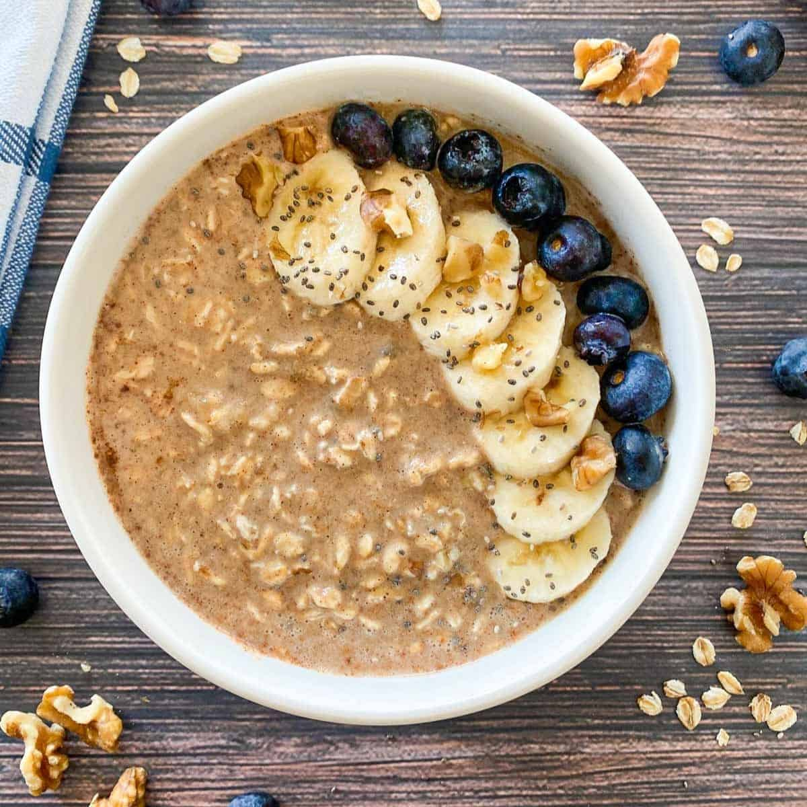

Overnight Oats

Description
Our overnight oats recipe is simplicity and heatlh at its finest. This recipe is great for
preppingin bulk or single serving.
Ingredients
- 1/2 cup oats
- 1/2 cup oatmilk
- 1 bananna
- 1 handful of blueberries
- 3 dash of cinnamon
- Sprinkle of walnuts
- 1/8 cup granola of your choice
- Optional: any other fruit your pretty little heart desires
Steps
- Rinse your fruit in cool water.
- Mix your oats, oatmilk, cinnamon, and half your fruit in a mason jar, tupperwear, or
small bowl
- Lightly place your remaining fruit on top of your oat mixture, cover, and
refridgerate overnight.
- Crush your nuts and sprinkle them on top of oats with granola
- Feassssssst!